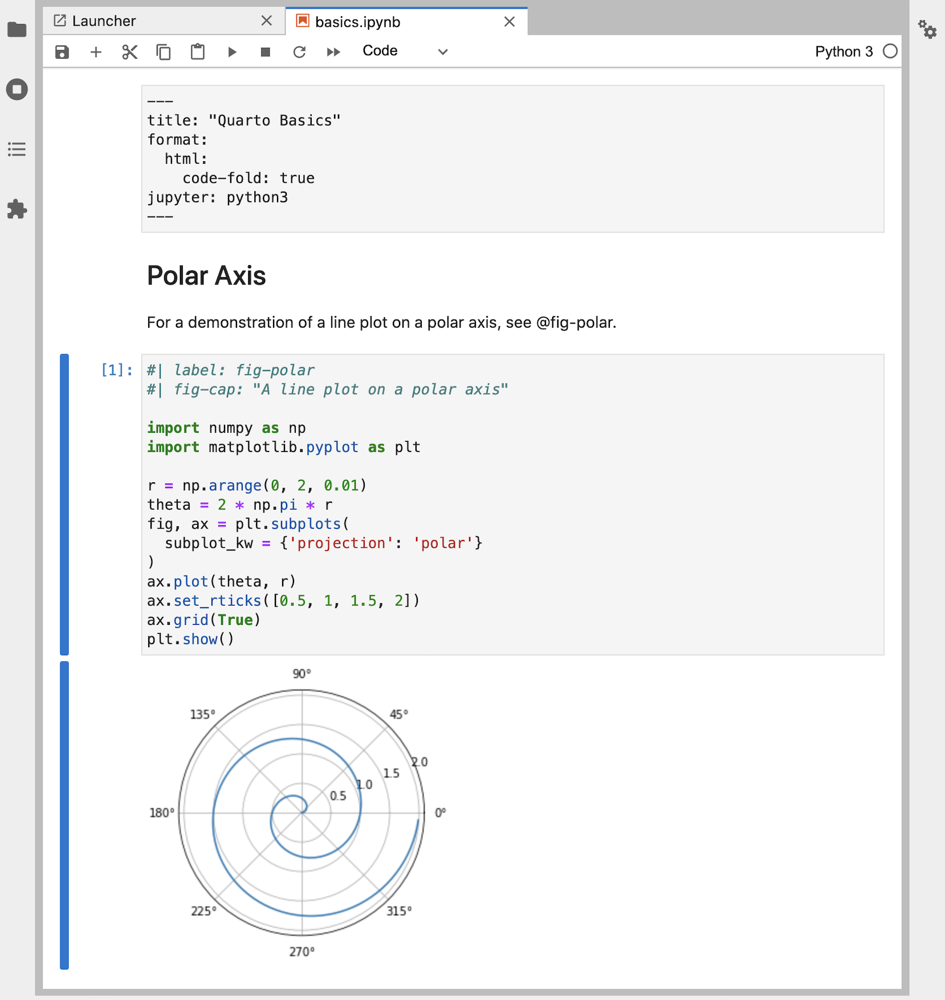

您好,Quarto
概述
在本教程中，我们将向你展示如何将 Jupyter Lab 与 Quarto 结合使用。 您将在 Jupyter Lab 中编辑代码和Markdown，就像使用其他记事本一样，并在工作时在网络浏览器中预览渲染文档。 以下为其浏览概述

左边的notebook渲染成右边的 HTML 版本。 这就是 Quarto 出版的基本模式–将源文档（本例中为notebook）渲染为各种output formats，包括 HTML、PDF、MS Word 等。
请注意，虽然本教程使用的是 Python，但也支持使用 Julia（通过 IJulia 内核）。 更多详情，请参阅Using Julia一文。
渲染
首先，我们将在 Jupyter Lab 中打开一个记事本 (hello.ipynb)，并将其渲染为几种格式。 如果你想在自己的环境中逐步学习，请下载下面的记事本。
然后，创建一个新的工作目录，将记事本复制到该目录，并在终端中切换到该目录。
接下来，执行以下命令安装 JupyterLab 以及教程中使用的软件包（ matplotlib 和 plotly ），并打开教程记事本：
| Platform | Commands |
|---|---|
| Mac/Linux | Terminal |
| Windows | Terminal |
下面是 Jupyter Lab 中我们的notebook。
---
title: "Quarto Basics"
format:
html:
code-fold: true
jupyter: python3
---
有关极轴线性图的演示，请参阅 @fig-polar。
```{python}
#| label: fig-polar
#| fig-cap: "A line plot on a polar axis"
import numpy as np
import matplotlib.pyplot as plt
r = np.arange(0, 2, 0.01)
theta = 2 * np.pi * r
fig, ax = plt.subplots(
subplot_kw = {'projection': 'polar'}
)
ax.plot(theta, r)
ax.set_rticks([0.5, 1, 1.5, 2])
ax.grid(True)
plt.show()
```
接下来，在 Jupyter Lab 中创建一个新终端，用于执行 Quarto 命令。

最后，将notebook渲染成几种格式。
Terminal
quarto render hello.ipynb --to html
quarto render hello.ipynb --to docx请注意，目标文件（本例中为 hello.ipynb）应始终是第一个命令行参数。
使用 Quarto 渲染 Jupyter notebook时，记事本的内容（代码、markdown 和输出）会被转换为纯 markdown，然后由 Pandoc处理，生成最终格式。

写作
quarto render 命令用于创建用于发布的文档最终版本。 不过，在编写过程中，您将使用 quarto preview 命令。 现在就从终端使用 hello.ipynb 试试吧。
Terminal
quarto preview hello.ipynb这将渲染您的文档，然后将其显示在浏览器中。

您可能需要将 Jupyter Lab 和浏览器预览并排放置，以便在工作时看到变化。
查看实时预览的运行情况：
将定义
theta的代码行修改如下：theta = 4 * np.pi * r重新运行代码单元，生成新版本的绘图。
保存在notebook（预览会自动更新）。
这是用 Quarto 创作的基本工作流程。一旦熟练掌握，我们还建议你安装Quarto JupyterLab Extension扩展，它提供了在 JupyterLab 中使用 Quarto 的其他工具。
我们的记事本中有几种不同类型的单元格，让我们对每种类型的单元格进行一下处理。
YAML 选项
您可能已经熟悉Markdown和代码块，但还有一种新的单元格类型（“Raw”），用于文档级 YAML 选项。
---
title: "Quarto Basics"
format:
html:
code-fold: true
jupyter: python3
---
尝试将 code-fold 选项更改为 false。
format:
html:
code-fold: false然后保存在notebook。 你会注意到，代码现在显示在绘图的上方，而之前它是隐藏的，只有一个 Code 按钮可以用来显示它。
Markdown 单元格
Markdown 单元格包含原始标记，将在渲染过程中传递给 Quarto。 您可以在这些单元格中使用任何有效的 Quarto markdown syntax。 在这里，我们指定了一个标题和一个与下面代码单元格中创建的图表的交叉引用。
## 极坐标
有关极轴线性图的演示，请参阅 @fig-polar。
尝试更改页眉并保存记事本，预览时会更新新的页眉文本。
代码块
您可能已经熟悉代码单元格，如下图所示。
```{python}
#| label: fig-polar
#| fig-cap: "A line plot on a polar axis"
import numpy as np
import matplotlib.pyplot as plt
r = np.arange(0, 2, 0.01)
theta = 2 * np.pi * r
fig, ax = plt.subplots(
subplot_kw = {'projection': 'polar'}
)
ax.plot(theta, r)
ax.set_rticks([0.5, 1, 1.5, 2])
ax.grid(True)
plt.show()
``` 但在代码单元格的顶部有一些新的组件：
但在代码单元格的顶部有一些新的组件：label 和 fig-cap 选项。 单元格选项是用 YAML 写成的，并使用特殊前缀的注释 (#|)。
在本例中，单元格选项用于使图形可交叉引用。 请尝试更改 fig-cap 和/或代码，运行单元格，然后保存记事本，查看更新后的预览效果。
你可以使用多种 cell options 来定制输出。 我们将在下一个教程中详细介绍这些选项。
一个特别有用的数字单元格选项是 “fig-alt”，它可以为有视觉障碍的用户在图像上添加替代文本。 欲了解更多信息，请参阅 Amy Cesal 的文章Writing Alt Text for Data Visualization。
下一步
您现在已经了解了创建和创作Quarto文档的基础知识。以下教程更深入地探讨了Quarto：
此外，你可能需要安装 Quarto JupyterLab Extension，它提供了在 JupyterLab 中使用 Quarto 的其他工具。